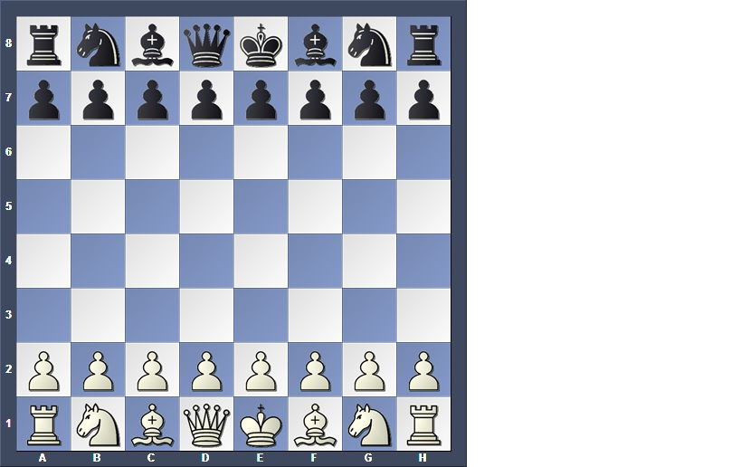

Sizing of the chessboard consists of an 8x8 grid (64 parts or squares). Within this board there are eight lines running vertically along the board. These eight lines are assigned numbers: 1,2,3,4,5,6,7,8. Also, the lines running horizontally are designated with letters: a,b,c,d,e,f,g,h. The letters we have consist of an 'a' line 'b' line and so on. We use these letters such that 'a' line is the first column 'b' line is the second column because each square belongs to one line and one row. If we were to call A5 that means we are going to the first column 'A' and up to the 5th row. A quick note that I must add is that the letter always comes before the number. So there cannot be a move for a piece to 5A ONLY to A5.
A student of Chess should know the Chessboard meticulously. When having to call out moves the players have to visualize the position of each individual square and how it relates to the neighboring squares. At the beginning of the game you should have at least 16 pieces. These pieces should consist of: 8 pawns, 2 knights, 2 bishops, 2 rooks, a King and a Queen piece. Click the following link to go to the pieces and movement page. Here we will be explaining what the pieces look like as well as the moves associated with them and when they can be performed. There is a determined position for each piece for the start of the game and players take turns alternatively. Chess pieces can be any color made out of just about any durable material but, when playing with black and white pieces whoever has the white pieces go first. Remember only one piece can be moved per turn except when castling. This is how your board should look at the beginning of the game: